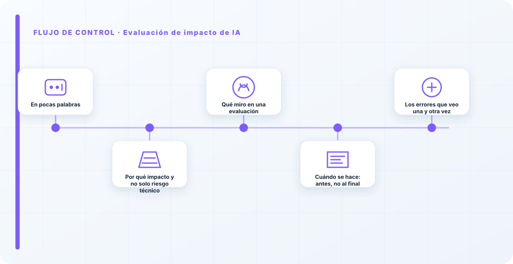
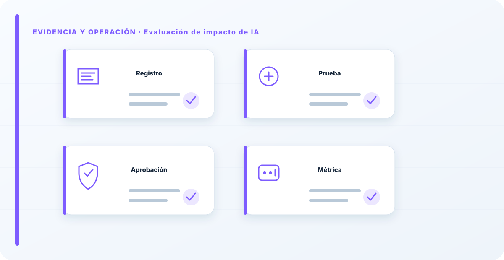

En pocas palabras
La evaluación de impacto es el momento en que dejo de mirar la IA como un problema técnico y empiezo a mirar a quién afecta. No pregunta "¿funciona el modelo?", pregunta "¿qué le puede pasar a una persona por culpa de esto?". Es el paso que separa a una organización que gestiona riesgo de verdad de una que solo comprueba que el sistema no se caiga. Y no es opcional para los usos serios: es una obligación explícita para los sistemas de alto riesgo del AI Act, además de una exigencia de sentido común.
Por qué impacto y no solo riesgo técnico
Un sistema puede funcionar técnicamente de maravilla y aun así hacer daño. Es la trampa que más veo. Un modelo de selección de personal puede tener una precisión estupenda en sus métricas y estar discriminando por sexo o por edad sin que nadie lo note, porque las métricas técnicas no miden eso. El riesgo técnico —que no se caiga, que responda rápido, que acierte en promedio— es necesario pero completamente insuficiente.
La evaluación de impacto mira lo otro, lo que las métricas ignoran: los derechos fundamentales, las personas concretas, los colectivos vulnerables, los efectos sobre el negocio y la reputación. Es incómoda por naturaleza, porque obliga a imaginar cómo puede salir mal para alguien, no para el sistema. Y esa incomodidad es justo su valor: te fuerza a pensar en el daño antes de causarlo.
Qué miro en una evaluación
No sigo un formulario ciego; hago preguntas que incomodan y las documento con honestidad. ¿A quién afecta este sistema, y quién es el más vulnerable de esos afectados? ¿Qué decisión toma o influye, y qué le pasa a una persona si se equivoca? ¿Puede discriminar, aunque sea sin querer, por cómo se entrenó o con qué datos? ¿La persona afectada sabe que hay una IA detrás, y puede reclamar o pedir revisión humana? ¿Qué datos usa, y con qué legitimidad?
Las respuestas a esas preguntas son las que deciden qué controles hacen falta —supervisión humana, transparencia, límites de uso— o, en algunos casos, si el caso de uso sencillamente no debería existir tal como está planteado. Una evaluación de impacto hecha en serio no es un trámite de "sí/no"; es un análisis que a veces cambia el diseño del sistema y a veces lo detiene.

Cuándo se hace: antes, no al final
El momento importa tanto como el contenido. Una evaluación de impacto hecha en la fase de diseño cambia el sistema: aún estás a tiempo de rediseñar, de poner controles, de descartar. Hecha justo antes de desplegar, cuando ya está todo construido, solo sirve para justificar lo que existe, porque cambiar algo cuesta diez veces más y nadie quiere tirar meses de trabajo. Para entonces, la evaluación se convierte en un sello, no en un filtro.
Por eso la coloco como puerta de la fase de diseño en el ciclo de vida: sin evaluación de impacto hecha y revisada, el sistema no pasa a desarrollarse. Y los riesgos que detecta no se quedan en un documento: aterrizan en el registro de riesgos, donde se gestionan con dueño y plan.
La mejor evaluación de impacto que he visto no llenó un formulario: mató un proyecto. El equipo se dio cuenta, evaluando el impacto, de que su caso de uso discriminaba de una forma que no podían arreglar, y lo pararon a tiempo. Eso es una evaluación que funciona. Si las tuyas siempre acaban en "riesgo aceptable, adelante", no estás evaluando: estás firmando. Una evaluación que nunca dice "no" no está mirando de verdad.
Los errores que veo una y otra vez
- Hacerla al final, cuando ya no cambia nada.
- Confundirla con el riesgo técnico o con la evaluación de protección de datos, y quedarse corto.
- Rellenar un formulario sin hacerse las preguntas incómodas.
- No involucrar a quien conoce a los afectados (negocio, personas), solo a técnicos.
- Que nunca salga un "no": una evaluación que todo lo aprueba no filtra nada.
- Documentarla para el auditor en vez de para decidir.
Cómo lo llevaría a un entorno real
Cuando aterrizo evaluación de impacto de ia en una organización, no empiezo por comprar una herramienta ni por redactar veinte páginas. Empiezo por dibujar qué ocurre hoy: quién solicita el cambio, quién lo aprueba, qué sistemas intervienen, qué datos cruzan el proceso y quién se entera cuando algo falla. Ese dibujo suele descubrir más problemas que cualquier checklist. En riesgo y cumplimiento, lo peligroso no es solo carecer de controles; también lo es creer que existen porque alguien los escribió una vez.
Después separo lo imprescindible de lo deseable. Lo imprescindible debe poder comprobarse: un responsable identificado, una regla clara, una evidencia fechada y un mecanismo para reaccionar. En este caso revisaría especialmente Evaluación, impacto y responsable. No me vale una respuesta del tipo «lo gestiona el proveedor» o «eso lo mira seguridad». Necesito saber qué persona toma la decisión, con qué información y dentro de qué plazo.
La implantación debe crecer con el riesgo. Un piloto interno puede funcionar con una ficha breve y una revisión manual. Un sistema que afecta a clientes, empleados, dinero o información sensible necesita segregación de funciones, pruebas independientes, monitorización y un expediente mantenido. Mi criterio es sencillo: cuanto más difícil sea deshacer el daño, más fuerte debe ser la barrera antes de producción.
Decisiones que deben quedar por escrito
Hay decisiones que no deberían vivir en una reunión ni en un mensaje de chat. Para evaluación de impacto de ia dejaría documentados el alcance, los supuestos, los límites de uso, las excepciones aceptadas y las condiciones que obligan a detener o reevaluar. El documento no tiene que ser enorme, pero sí debe permitir que otra persona entienda por qué se hizo lo que se hizo.
También registraría quién puede cambiar control, quién valida evidencia y quién recibe las alertas relacionadas con Evaluación. Cuando esas tres responsabilidades se mezclan, aparece el clásico problema: el mismo equipo construye, aprueba y declara que todo funciona. No siempre se puede separar por completo, sobre todo en organizaciones pequeñas, pero al menos debe existir una revisión por alguien que no dependa del éxito inmediato del despliegue.
Las excepciones merecen un tratamiento propio. Una excepción sin fecha de caducidad acaba convirtiéndose en la arquitectura real. Por eso exigiría motivo, riesgo aceptado, responsable, compensaciones, fecha de revisión y criterio de cierre. Si falta uno de esos elementos, no es una excepción gestionada; es una deuda invisible.

Un ejemplo práctico
Imaginemos que un equipo quiere incorporar evaluación de impacto de ia a un servicio que ya está en producción. La propuesta promete reducir tiempos y automatizar tareas, pero utiliza componentes que cambian con frecuencia. Antes de aprobarlo, pediría una prueba limitada, un inventario de dependencias, un flujo de datos y una definición clara de qué acciones quedan fuera del alcance.
Durante la prueba recogería resultados normales y casos límite. No solo miraría si funciona; comprobaría qué ocurre cuando faltan datos, cambia una versión, se pierde conectividad, llega una entrada manipulada o un usuario intenta superar sus permisos. Ahí es donde se ve si el diseño aguanta. En muchas pruebas felices todo parece seguro porque nadie ha intentado romper la hipótesis de partida.
Si los resultados son aceptables, la salida a producción tendría condiciones: versión fijada, configuración aprobada, logs disponibles, responsables de guardia, procedimiento de rollback y revisión tras las primeras semanas. Si alguno de esos elementos no existe, prefiero retrasar el despliegue. Un día de demora suele ser más barato que investigar después un comportamiento que nadie puede reconstruir.
Qué evidencias guardaría
Para demostrar que el control funciona conservaría evidencias que cuenten una historia completa, no capturas sueltas. La historia debe enlazar necesidad, decisión, implementación, prueba y operación. En evaluación de impacto de ia eso incluye como mínimo la ficha del activo, el diagrama vigente, la configuración aprobada, el resultado de las pruebas y el registro de cambios.
No guardaría información por acumular. Si los logs contienen prompts, documentos, datos personales o secretos, aplicaría minimización, control de acceso y retención. La evidencia debe ayudar a investigar y auditar sin crear una segunda fuga de información. Es frecuente endurecer el sistema principal y dejar un repositorio de evidencias abierto a demasiadas personas.
- Propietario y finalidad de evaluación de impacto de ia, con fecha de revisión.
- Inventario de Evaluación, impacto y dependencias asociadas.
- Criterios de aceptación y resultados sobre responsable y control.
- Configuración efectiva, versión y aprobación del cambio.
- Alertas, incidentes, excepciones y acciones correctivas cerradas.
Señales de que el control no está funcionando
El primer síntoma es que nadie sabe responder con rapidez quién es el responsable. El segundo es que la documentación describe una versión distinta de la que está operando. El tercero es que las alertas existen, pero llegan a un buzón que nadie revisa. Cuando aparecen esos tres síntomas, el problema no es tecnológico: el control se ha desconectado de la operación.
También desconfío de las métricas demasiado perfectas. Cero incidentes, cero excepciones y cien por cien de cumplimiento pueden significar excelencia, pero con frecuencia significan que no estamos mirando. Prefiero indicadores que enseñen tendencia: tiempo de corrección, antigüedad de excepciones, cobertura de pruebas, cambios sin revisión y reincidencias.
Por último, revisaría el comportamiento después de cada cambio significativo. En IA, una actualización de modelo, dataset, prompt, herramienta, permiso o proveedor puede alterar el riesgo sin cambiar el nombre del servicio. Si el proceso solo reevalúa cuando se crea un proyecto nuevo, se quedará ciego durante la mayor parte de la vida útil.
Mi criterio de cierre
Considero que evaluación de impacto de ia está razonablemente controlado cuando el equipo puede explicar el proceso sin depender de una sola persona, reconstruir una decisión con evidencias y detener el servicio sin improvisar. No busco perfección documental; busco que la organización pueda tomar decisiones repetibles bajo presión.
El cierre no consiste en marcar todas las casillas. Consiste en demostrar que los riesgos relevantes tienen propietario, que los controles se prueban y que las desviaciones producen una acción. Si la evidencia no cambia ninguna decisión, probablemente estamos generando burocracia. Si una decisión importante no deja evidencia, estamos creando fragilidad.
Este enfoque es el que intento mantener en toda CyberLibrary AI: explicar el control de forma que lo entienda negocio, pero con suficiente profundidad para que arquitectura, seguridad, auditoría y operaciones puedan aplicarlo de verdad.
Referencias y marcos relacionados
Contenido educativo y técnico. No sustituye asesoramiento jurídico ni una auditoría formal.